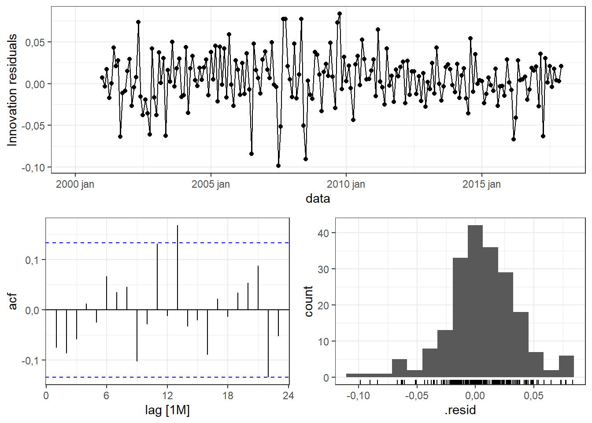

3 Decomposição de séries temporais
3.1 Decomposição
As séries temporais exibem comportamentos variados. Quando uma série temporal apresenta um padrão subjacente, este padrão pode ser separado da aleatoriedade, viabilizando sua projeção para períodos futuros. Em muitos casos pode ser interessantes ainda decompor a série temporal em componentes. A decomposição pode facilitar a análise e previsão. Geralmente considera-se a tendência, sazonalidade e o resto ou resíduos na decomposição, havendo vários métodos para separar tais componentes. Antes, porém, são importantes algumas considerações sobre tratamentos iniciais às vezes necessários.
3.1.1 Ajustes e transformações
Alguns ajustes são comumente necessários antes de realizar a decomposição de uma série temporal. Por exemplo, em alguns casos é importante corrigir a sazonalidades devido à diferenças de calendário. Em séries que exibem alguma variável com frequência mensal, pode haver alguma sazonalidade nos meses com número menor de dias, sendo interessante talvez trabalhar com a média mensal, dividindo a variável pelo número de dias de cada mês.
Dados relacionados à população também podem ser ajustados per capita, ou por pessoa. Este ajuste é muito comum no PIB e em outras variáveis econômicas, por exemplo. Em séries relacionadas a disponibilidade de algum serviço para a população é mais fácil avaliar a disponibilidade ajustando os dados por mil pessoas, por exemplo, de forma a eliminar o efeito do crescimento populacional. O mesmo pode ser feito para séries de saúde pública, por exemplo de número de pessoas infectadas ou a mortalidade pode ser dividida por 1000 ou 100 mil, dependendo da ordem de grandeza de cada série, de forma a viabilizar comparação entre populações de localidades distintas. Em séries econômicas às vezes é importante considerar a inflação, de forma a dar uma dimensão real da série, permitindo comparação em diferentes momentos. Para deflacionar uma série basta dividí-la pelo deflator, um índice que corrige a inflação.
Transformações como a de Box-Cox ou outra mais simples também podem ser úteis para facilitar o tratamento da série. Conforme visto anteriormente, uma série que exibe uma variação sazonal não constante, ou heterocedástica, ao ser transformada pode exibir um padrão de sazonalidade de mais fácil decomposição ou tratamento.
A série plotada na Figura 3.1 consiste na produção mensal de gás natural no Brasil a partir os anos 2000. A série está disponível em Dados estatísticos - Agência nacional de petróleo.
A Figura 3.2 plota novamente a série considerando a normalização por número de dias no mês.

A série normalizada é submetida a uma transformação de Box-Cox de forma a corrigir a heterocedasticidade, com \(\lambda=-0.06\), sendo o resultado plotado na Figura 3.3.

3.2 Componentes de uma série
Assumindo uma decomposição aditiva, pode-se escrever:
\[ y_t = S_t+ T_t+R_t, \]
onde \(S_t\) é a componente sazonal, \(T_t\) é a tendência e \(R_t\) é o resto no período \(t\). No caso multiplicativo tem-se:
\[ y_t = S_t \times T_t \times R_t \]
O caso multiplicativo é ideal quando a variação em séries sazonais muda com o tempo, seguindo padrão heterocedástico.
A série plotada na Figura 3.4 exibe o índice de produção física mensal de bens intermediários, ou seja, aqueles empregados na produção de produtos finais, tais como produtos minerais, produtos metalúrgicos, têxteis, papel e celulose, produtos químicos, borracha, plásticos, componentes elétricos e eletrônicos.
A Tabela 3.1 exibe as primeiras linhas das componentes da série, considerando a decomposição aditivavia método STL.
| Data | Valor | Tendência | Sazonalidade | Resto |
|---|---|---|---|---|
| 2002 jan | 87,97245 | 95,10887 | -7,0894994 | -0,0469214 |
| 2002 fev | 85,22869 | 95,33164 | -11,1630761 | 1,0601292 |
| 2002 mar | 94,94150 | 95,55440 | 0,8473573 | -1,4602601 |
| 2002 abr | 96,00238 | 95,77717 | -2,0387398 | 2,2639509 |
| 2002 mai | 99,12757 | 95,99987 | 3,8247141 | -0,6970134 |
| 2002 jun | 97,15759 | 96,22257 | 1,7226365 | -0,7876163 |
A série é plotada novamente na Figura 3.5 com a tendência em destaque. Observam-se dois períodos de queda mais acentuada relativos à crise de 2008/2009 e à pandemia de COVID-19.

As componentes são plotadas separadamente na Figura 3.6.

3.3 Dados com sazonalidade ajustada
Pode ser útil remover a sazonalidade da série, resultando em uma série com sazonalidade ajustada. Para casos aditivos a série resultante seria dada por \(y_t-S_t\), enquanto que para casos multiplicativos seria \(y_t/S_t\).
Na Figura 3.7 plota-se a série de produtos intermediários ajustada sazonalmente.
3.4 Média móvel
Um dos métodos clássicos para estimar a tendência é a média móvel. Uma média móvel de ordem \(m\) pode ser escrita como segue.
\[ \hat{T}_t=\frac{1}{m}\sum_{j=-k}^{k} y_{t+j} \]
Denota-se uma média móvel como \(m\)-MA, ou média móvel de ordem \(m\). A título de exemplo seja a série \(5,10,12,20,23,27\). Considerando \(k = 2\), tem-se uma média móvel de ordem \(m=5\), 5-MA. Para este caso, seguem os cálculos das médias móveis para a terceira e quarta observações, \(t=3,4\). Observa-se que o \(k\) determina o número de observações não suavizadas no ínico e fim da série.
\[ \hat{T}_3=\frac{1}{2\times2+1}(5+10+12+20+23)=14 \]
\[ \hat{T}_4=\frac{1}{2\times2+1}(10+12+20+23+27)=18,4 \]
Na Figura 6.5 observa-se graficamente a média móvel com diferentes ordens, para a série de volume de carros produzidos no Brasil. Quando maior a ordem da série, mais suave o resultado.

É interessante em alguns casos realizar a média móvel de uma média móvel, com o objetivo final de centrar médias móveis pares. Uma média móvel \(2\times4\)-MA consiste em uma média móvel \(4\)-MA seguida de uma \(2\)-MA.
Por exemplo, para a série da Tabela 3.2 o problema da média móvel \(4\)-MA é que ela não é simétrica em relação à série original, tendo uma observação não estimada no início e duas no final. Ao tomar desta série resultante uma média móvel de ordem \(2\)-MA, resultando na \(2\times4\)-MA, tem-se uma série média móvel simétrica com a original, com duas observações ausentes no início e fim. É importante observar que a média móvel \(4\)-MA considera uma observação anterior, e duas posteriores, além da observação no período \(t\). Já a média móvel \(2\)-MA considera a observação anterior e a do o período \(t\).
| Série | \(4\)-MA | \(2\times4\)-MA |
|---|---|---|
| 5 | ||
| 10 | 11,75 | |
| 12 | 16,25 | 14 |
| 20 | 20,5 | 18,375 |
| 23 | 25 | 22,75 |
| 27 | ||
| 30 |
3.5 Estimando a tendência com dados sazonais
Ao realizar uma média móvel \(2\times4\)-MA, a estimativa feita ao final fica conforme a Equação abaixo, consistindo em uma média ponderada.
\[ \hat{T}_t=\frac{1}{8}y_{t-2}+\frac{1}{4}y_{t-1}+\frac{1}{4}y_{t}+\frac{1}{4}y_{t+1}+\frac{1}{8}y_{t+2} \]
Este modelo pode ser usado para estimar tendência de séries com sazonalidade quadrimestral, por exemplo. Recomenda-se usar uma média móvel de ordem \(2\times m\)-MA para estimar a tendência de uma série com sazonalidade de ordem \(m\).
Na Figura 3.9 observa-se novamente a série de índice de produção de itens intermediários plotada sazonalmente. Como ficou clara a sazonalidade anual, pode-se pensar na suavização de ordem \(2\times 12\)-MA.
A Figura 3.10 exibe a série do índice de produção de produtos intermediários com média móvel \(2\times 12\)-MA. Pode-se confirmar que a sazonalidade foi eliminada. A tendência estimada é muito similar à obtida anteriormente com método mais sofisticado.

3.6 Decomposição clássica
A decomposição clássica tem um século de tradição e é o primeiro método de decomposição (Makridakis, Wheelwright, e Hyndman 2008). Ela contempla a forma aditiva e a multiplicativa. A seguir são expostos os passos para a decomposição aditiva:
Se o período sazonal, \(m\), é par, estime a tendência, \(\hat{T}_t\),, como uma média móvel \(2\times m\)-MA. Se \(m\) é ímpar, estime a tendência com uma média móvel \(m\)-MA.
Calcule a série sem a tendência, \(y_t - \hat{T}_t\).
Calcule a componente sazonal para cada estação como a média de todos os períodos desta. Por exemplo, para uma série com sazonalidade anual. O mês de janeiro terá como valor de \(\hat{S}_t\) a média de todas as observações de janeiro. O procedimento é realizado para todos os meses.
Calcule o resto tomando a diferença da série em relação à tendência a sazonalidade, \(\hat{R}_t=y_t - \hat{T}_t - \hat{S}_t\).
A Figura 3.11 expõe o resultado gráfico da decomposição clássica da série de produtos intermediários. Pode-se observar que neste caso a sazonalidade é constante, diferente do resultado óbtido com método mais sofisticado.

Passos para a decomposição multiplicativa.
Se o período sazonal, \(m\), é par, estime a tendência \(\hat{T}_t\) como uma média móvel \(2\times m\)-MA. Se \(m\) é ímpar, estime a tendência com uma média móvel \(m\)-MA.
Calcule a série sem a tendência, \(y_t / \hat{T}_t\).
Calcule a componente sazonal para cada estação como a média de todos os períodos desta. Por exemplo, para uma série com sazonalidade anual. O mês de janeiro terá como valor de \(\hat{S}_t\) a média de todas as observações de janeiro. O procedimento é realizado para todos os meses.
Calcule o resto tomando a razão da série em relação à tendência e à sazonalidade, \(\hat{R}_t=y_t / (\hat{T}_t \times \hat{S}_t)\).
A Figura 3.12 plota o número de passageiros em vôos no Brasil, disponível em Dados Abertos da Agência Nacional de Aviação Civil (ANAC). Pode-se observar além da tendência uma variação cíclica com amplitude crescente ao longo dos anos.

Observa-se na Figura 3.13 sazonalidade anual com picos nos períodos de férias escolares, em Julho e Dezembro/Janeiro. A mudança ao longo dos anos na inclinação das linhas nos períodos de pico confirma o padrão heterocedástico da série.

A Figura 3.14 expõe o resultado gráfico da decomposição clássica multiplicativa da série de passageiros em vôos no Brasil.
3.7 Decomposição via STL
A sigla STL significa Seasonal and Trend decomposition using Loess”* que em português seria decomposição de tendência e sazonalidade usando LOESS (Cleveland et al. 1990). LOESS significa locally estimated scatterplot smoothing, sendo um método de regressão não linear, que é comumente chamado de regressão local.
O método STL apresenta diversas vantagens em relação à decomposição clássica e foi concebido considerando os seguintes critérios:
- Simples de aplicar;
- É flexpivel em relção à quantidade de variação nas componentes de tendência e ciclo;
- Pode-se especificar o número de observações por ciclo para qualquer inteiro maior que 1;
- É possíel fazer a decomposição mesmo com valores ausentes na série;
- Estimativa de tendência e sazonalidade robusta a comportamentos aberrantes, mesmo para séries longas.
Tanto a tendência quanto a sazonalidade são estimadas via LOESS. Suponha que seja definida uma janela de 7 observações para estimar a tendência. Para cada observação, \(y_t\), são consideradas as observações \(y_{t-3}, y_{t-2}, y_{t-1}, y_t, y_{t+1}, y_{t+2}, y_{t+3}\), sendo a estimativa da tendência, \(\hat T_t\), realizada como a média ponderada de tais observações, com peso decrescendo com a distância da observação considerada para \(y_t\). Após a remoção da tendência a estimativa da componente sazonal considera uma suavização dos subciclos sazonais usando uma combinação de média-móvel e LOESS. É possível obter ciclos sazonais idênticos, conforme a decomposição clássica, bastando para tal definir a janela sazonal como infinita. O método tem um algoritmo detalhado que define bem como cada componente é estimada, conforme Cleveland et al. (1990). O resto é calculado, de forma similar à decomposição clássica, \(R_t=y_t-T_t-S_t\).
O método, entretanto, tem algumas limitações. As possibilidades elencadas são disponíveis apenas para decomposições aditivas. Para casos de séries com variancia não estável, sugerindo um padrão de decomposição multiplicativa, recomenda-se transformar a série via logaritmo ou Box-Cox e depois fazer a decomposição aditiva.
A Figura 3.15 expõe os gráficos da decomposição do logarítmo da série de passageiros em vôos do Brasil. A tendência foi estimada usando uma janela de 7 observações, enquanto a sazonalidade com \(m=12\) meses, considerou uma janela de 11 observações nos subciclos sazonais.

3.8 Previsão via decomposição
A Figura Figura 3.16 apresenta a previsão via decomposição para o caso anterior. Foi considerado até o ano de 2018 para treinamento e pode-se observar a previsão para 2019 e 2020 junto com as observações disponíveis. A componente sazonal pode ser prevista usando qualquel outro método de previsão, sendo no exemplo usado o método ingênuo sazonal. No exemplo foram considerados 4 modelos com^binando tendência com janela de 7 e 11 observações e sazonalidade com janela de 11 subciclos e janela infinita.

A Figura 3.17 apresenta os resíduos obtidos da decomposição para o modelo stl2, com janela de 11 períodos tanto para a tendência quanto para a sazonalidade. Observa-se que apresentam boa aderência à normal, porém com autocorrelação nos lags 13 e 22. Entretanto, o teste de Ljung-Box confirma que não há indícios para rejeição da hipótese nula de ausência de autocorrelção, conforme Tabela 3.3.

| Estatística | pvalor |
|---|---|
| 28,57104 | 0,2366933 |
Por fim, a Tabela 3.4 resume o desempenho dos modelos via decomposição para previsão dos anos de 2018 e 2019. Observa-se que o modelo stl2 foi superior, com 2,10% de erro.
| Modelo | RMSE | MAE | MAPE |
|---|---|---|---|
| stl1 | 275651,8 | 229004,8 | 2,293052 |
| stl2 | 264428,2 | 212926,2 | 2,104214 |
| stl3 | 356204,4 | 303213,8 | 3,080763 |
| stl4 | 369687,3 | 312281,2 | 3,185243 |
3.9 Implementação em R
A seguir apresenta-se parte das implementações na linguagem R para obter os dados, gráficos e análises expostos no presente capítulo. Os dados utilizados estão disponíveis em Previsão, por Robson Bruno Dutra Pereira.
Carregando pacotes.
library(tsibble)
library(dplyr)
library(tidyr)
library(ggplot2)
library(fabletools)
library(feasts)
library(fable)
library(forecast)
library(lubridate)
theme_set(theme_bw())Série mensal de produção de gás natural no Brasil.
gn <- read.csv("gasnatural.csv", header=T)
gn_ts <- gn |>
mutate(Data = yearmonth(as.Date(Data,
format= "%m/%d/%Y"))) |>
as_tsibble(index=Data)Visualizando.
gn_ts |>
autoplot(Producao) +
ggtitle("Produção mensal de GNV no Brasil")Normalizando a série por número de dias de cada mês.
gn_norm <- gn_ts |>
mutate(dias_no_mes = days_in_month(Data),
Producao_normalizada = Producao/dias_no_mes) Visualizando.
gn_norm |>
autoplot(Producao_normalizada) +
ggtitle("Produção mensal média de gás natural no Brasil")Aplicando transformação de Box-Cox na série.
lambda <- gn_norm |>
features(Producao_normalizada, features = guerrero) |>
pull(lambda_guerrero)
gn_norm |>
autoplot(box_cox(Producao_normalizada, lambda)) +
ggtitle("Série transformada de LGN no Brasil")Série do índice de produção de bens intermediários. A série com todos os índices foi apresentada no capítulo 1.
prod_inter <- prod_ts |>
filter(indice=="intermediarios") |>
select(!indice)
prod_inter |>
autoplot(valor) +
ggtitle("Índice de produção de produtos intermediários")Gráfico sazonal da série de produtos intermediários.
prod_inter |>
gg_season(valor)Tendência para a série de produção de produtos intermediários via média móvel. O comando slide_dbl itera é usado para tal, sendo definida a janela com .before e .after. Faz-se inicialmente a média móvel 12-MA e depois 2-MA no resultado da primeira, de forma a obter a média móvel \(2\times12\)-MA.
prod_inter <- prod_inter |>
mutate(`12-MA` = slider::slide_dbl(valor, mean,
.before = 5,
.after = 6,
.complete = T),
`2x12-MA` = slider::slide_dbl(`12-MA`, mean,
.before = 1,
.after = 0,
.complete = T))
prod_inter |>
autoplot(valor, colour = "grey") +
geom_line(aes(y=`2x12-MA`), colour = "seagreen") +
ggtitle("Índice de produção de produtos intermediários")Decomposição clássica aditiva da série de produtos intermediários. Usa-se o comando classical_decomposition com o argumento type = "additive".
dcomp <- prod_inter |>
model(classical_decomposition(valor,
type = "additive")) |>
components()
dcompdcomp |>
autoplot() Série de passageiros em vôos domésticos do Brasil.
voosbr <- read.csv("voosbr_ts.csv",
header = T)voosbr_ts <- voosbr |>
mutate(data = yearmonth(data)) |>
as_tsibble(index = data)voosbr_ts |>
filter(year(data)<2020) |>
autoplot(Passageiros) +
labs(title="Passageiros em vôos no Brasil", x="")Decomposição via STL da série de passageiros com transformação logaritimica. Deve-se usar o comando STL. Tanto a tendência, trend, quando a sazonalidade, season, podem ter a janela ajustada com o argumento window, com número ímpar. Para o exemplo abaixo foi usado 7 para a tendência e 11 para a sazonalidade. Se window = "periodic" na sazonalidade, então obtém-se a parte sazonal idêntica ao longo dos anos. O período da sazonalidade é fornecido com argumento period.
voosbr_ts |>
filter_index(~"2019-12") |>
model(
stl1 = STL(log(Passageiros) ~ trend(window = 7) +
season(period = 12, window = 11), robust = TRUE)
) |>
components() |>
autoplot() + labs(title =
"Decomposição da série log(passageiros) em vôos do Brasil")Modelagem via decomposição. Modelos STL para a série de produtos intermediários.
pi_stl_fit <- prod_inter |>
filter_index(~"2021-12") |>
model(
stl1 = decomposition_model(
STL(valor ~ trend(window = 7) + season(period = 12, window = 11),
robust = TRUE), NAIVE(season_adjust)),
stl2 = decomposition_model(
STL(valor ~ trend(window = 11) + season(period = 12, window = 11),
robust = TRUE), NAIVE(season_adjust)),
stl3 = decomposition_model(
STL(valor ~ trend(window = 7) + season(period = 12, window = "periodic"),
robust = TRUE), NAIVE(season_adjust)),
stl4 = decomposition_model(
STL(valor ~ trend(window = 11) + season(period = 12, window = "periodic"),
robust = TRUE), NAIVE(season_adjust))
)pi_stl_fit |> select(stl4) |>
gg_tsresiduals()Teste de Ljung-Box, considera-se 0 graus de liberdade para o teste, uma vez que o modelo não é baseado em parâmetros, mas em suavização da componentes. Em relação à defasagem, considera-se no argumento lag \(2\times m\).
augment(pi_stl_fit) |>
filter(.model == "stl4") |>
features(.innov, ljung_box, lag=24, dof=0)Previsão para 2 anos e 7 meses à frente.
pi_stl_fit |>
forecast(h=31) |>
autoplot(prod_inter, level = NULL) +
ggtitle("Previsão para o índice de produção de produtos intermediários")Métricas de desempenho para a previsão.
pi_stl_fc <- pi_stl_fit |>
forecast(h=31)
pi_future <- prod_inter |>
filter_index("2022-01"~.)
accuracy(pi_stl_fc, pi_future) |>
select(.model, RMSE, MAE, MAPE)Decomposição clássica multiplicativa da série de passageiros.
voosbr_ts |>
filter(year(data)<2020) |>
model(
classical_decomposition(Passageiros, type = "multiplicative")
) |>
components() |>
autoplot() +
labs(title = "Decomposição clássica multiplicativa da série Passageiros")Modelo via decomposição por STL. São testados quatro modelos variando a janela da tendência, conforme Figura 3.16.
fit_dcmp <- voosbr_ts |>
filter(year(data)<2018) |>
model(
stl1 = decomposition_model(
STL(log(Passageiros) ~ trend(window = 7) + season(period = 12, window = 11),
robust = TRUE), NAIVE(season_adjust)),
stl2 = decomposition_model(
STL(log(Passageiros) ~ trend(window = 11) + season(period = 12, window = 11),
robust = TRUE), NAIVE(season_adjust)),
stl3 = decomposition_model(
STL(log(Passageiros) ~ trend(window = 7) + season(period = 12, window = "periodic"),
robust = TRUE), NAIVE(season_adjust)),
stl4 = decomposition_model(
STL(log(Passageiros) ~ trend(window = 11) + season(period = 12, window = "periodic"),
robust = TRUE), NAIVE(season_adjust))
)Visualizando a previsão para 2019 e 2020 juntamente com os dados a partir de 2015.
fc_decomp <- fit_dcmp |>
forecast(h=24)
fc_decomp |>
autoplot(voosbr_ts |>
filter_index("2015-01"~"2019-12"), level = NULL) +
labs(y = "",
title = "Previsão via decomposição da série de log(passageiros)")Resíduos do modelo stl2 via decomposição por STL.
fit_dcmp |>
select(stl2) |>
gg_tsresiduals()Métricas de desempenho para os dois anos separados para teste.
accuracy(fc_decomp,
voosbr_ts |>
filter_index("2018-01"~"2019-12")) |>
select(.model, RMSE, MAE, MAPE)3.10 Exercícios propostos
- A seguir exibe-se o código para obtenção da série temporal mensal do volume em \(m^3\) de produção de asfalto no Brasil, um derivado do petróleo. A série aparenta apresentar um padrão de sazonalidade anual com variação não aditiva. Aplique a transformação de Box-Cox na série. Qual o valor ótimo do parâmetro \(\lambda\)? Faça o gráfico da série transformada.
petro <- read.csv("petroleo_e_derivados.csv", header=T)
petro <- petro |> select(-c(gasolina_aviao,
outros_energeticos))
petro_ts <- petro |>
pivot_longer(cols = petroleo:solvente,
names_to = "derivado", values_to = "volume") |>
mutate(data = as.Date(data, format="%m/%d/%Y"))
petro_ts <- petro_ts |>
as_tsibble(key = derivado,
index = data) |>
mutate(data = yearmonth(data))
asfalto <- petro_ts |>
filter(derivado == "asfalto") |>
select(!derivado)Uma vez que a série exibe um padrão de sazonalidade anual e tem frequência mensal, qual a ordem de média móvel seria adequada para estimar a tendência via método clássico?
Faça um gráfico da série de produção de asfalto transformada com curva da tendência usando média móvel com a ordem adequada, segundo sua resposta na questão anterior.
- Faça a decomposição aditiva da série do índice de produção de bens de consumo duráveis usando o método clássico.
- Faça a decomposição clássica da série transformada de produção de asfalto usando o método clássico. Uma vez que a série foi transformada, você recomenda usar o método aditivo ou multiplicativo?
- Estime modelos via decomposição por STL da série de produção de asfalto. Porém, neste caso, considere a série sem transformação de Box-Cox, utilize apenas transformação logarítimica para o volume produzido. Teste modelos com janela de 5 e 11 para a tendência e janela de 11 e infinita (“periodic” ou Inf) para a sazonalidade. Faça um gráfico da série com as previsões obtidas com o modelo STL para os 32 meses disponíveis a partir de 2023
(h=32).
- Calcule as métricas de desempenho para o modelo avaliado nos meses separados para teste.
- Avalie os resíduos do melhor modelo.